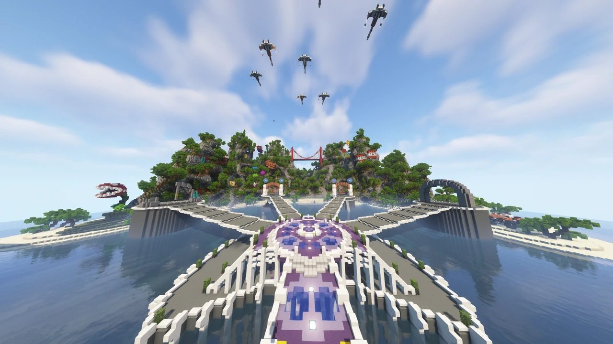
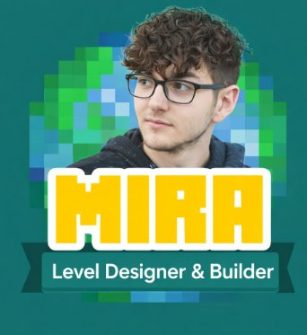
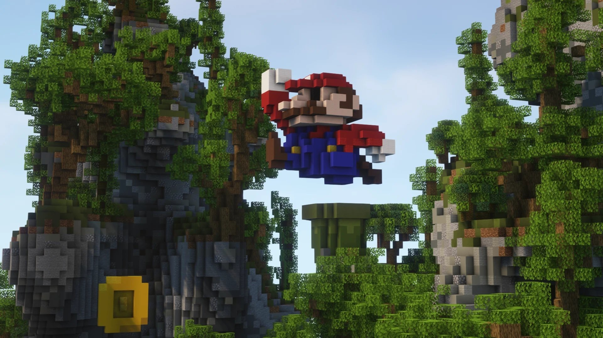

Introduction
Projet Mira est un projet collaboratif réalisé avec des amis travaillant chez Epitech. L'objectif est de créer un serveur entièrement personnalisé, aussi bien sur le plan technique que créatif.
De mon côté, ce projet me permet avant tout de développer mes compétences en level design, en imaginant et en construisant des environnements pensés pour le gameplay, l'immersion et l'expérience joueur. C'est un espace de création libre dans lequel je peux tester, expérimenter et concrétiser des concepts.
Une de nos constructions
Nous avons passé environ 4 mois à réaliser ce projet avec des jours off car je me suis consacré à mes études en parallèle. J'avais 16 ans lorsque nous avons réalisé ce projet avec notre équipe constituée par ailleurs d'étudiants en programmation d'Epitech, âgés de 19 ans et plus.
Une partie du lobby
Pour ce projet, nous étions 3 "Builders". Il y a 32 références à différents jeux vidéos dans ce lobby — arriverez-vous à les retrouver ?

Mon rôle — Level Designer / Builder
Sur le Projet Mira, j'interviens principalement en tant que Level Designer et Builder. Je suis en charge de la conception et de la réalisation des environnements du serveur, en lien direct avec les besoins du gameplay et les idées de l'équipe. Ce rôle me permet de travailler à la fois sur l'aspect artistique et sur la manière dont les joueurs vont évoluer et interagir dans les espaces.
Mes missions principales :
→ Conception de maps et zones de jeu
→ Builds pensés pour le gameplay et la lisibilité
→ Travail sur l'ambiance et les volumes
→ Collaboration avec l'équipe technique
Différents builds
Sur ces différentes images on peut retrouver différents builds : une voiture de F1, la triforce, l'œuf de Yoshi, le Faucon Millenium, une Pokéball ainsi qu'un personnage Among Us. Nous pouvons aussi voir un début de build sur une scène culte dans Fast and Furious.
Galerie du projet
Hub Principal
Le hub principal est pensé comme le cœur du serveur. Il doit être à la fois lisible, accueillant et immersif, tout en facilitant l'orientation des joueurs.
Nous avons travaillé sur :
Une architecture claire et identifiable
Une circulation fluide entre les différentes zones
Une ambiance visuelle cohérente avec l'univers du projet
Visualisation 3D isométrique — Hub Mira
Vue isométrique · Hub principal Mira
Placeholder
Mon processus de création
Le Projet Mira me permet de travailler mes idées de level design de manière concrète. Mon processus de création passe généralement par :
01.Une réflexion sur l'objectif de la zone et son gameplay
02.La recherche d'inspirations et d'ambiances
03.La conception des volumes et des parcours
04.La construction du build
05.Des ajustements en fonction des retours et des contraintes techniques
Ce processus m'aide à transformer des concepts abstraits en environnements jouables et cohérents.
Un projet pour développer mes concepts
Au-delà du projet en lui-même, Projet Mira est un terrain d'expérimentation. Il me permet de tester des idées de level design, d'explorer différentes ambiances et styles, et d'améliorer ma compréhension du lien entre environnement et gameplay.
Les projets de construction Minecraft ont été réalisés dans l'objectif d'ouvrir un serveur Minecraft différent et nourri en builds. Nous étions 13 dans ce projet — il est actuellement en pause de développement.
Équipe
LÉO LUSSAN
Level Designer · Builder · Conception des environnements · Chef de projet
ÉQUIPE EPITECH
13 membres · Développeurs · Builders · Étudiants Epitech
Outils utilisés
⛏ Minecraft Java
🎨 Suite Adobe
🔀 Git
🗺 WorldEdit